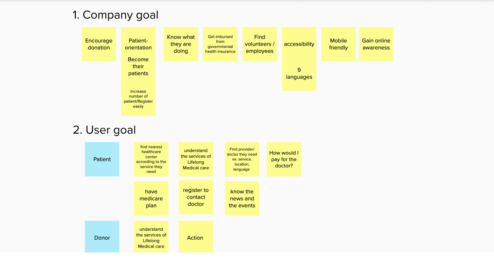
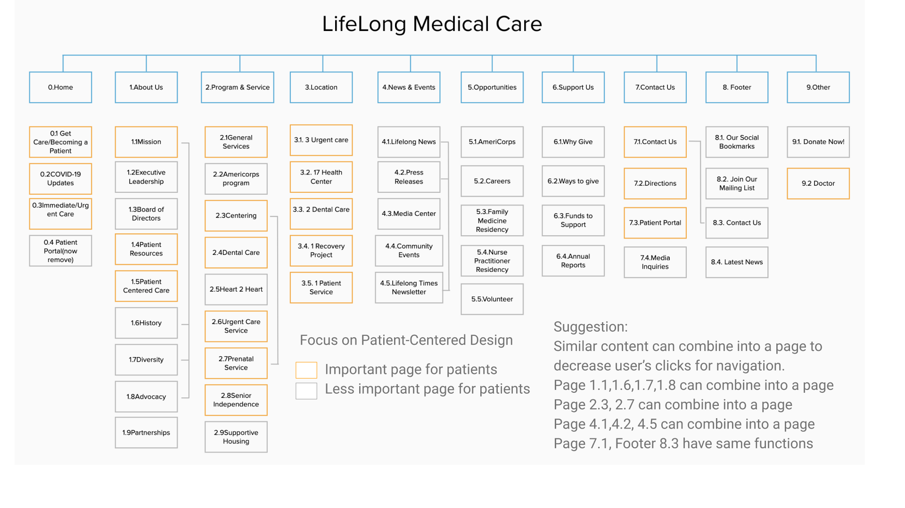
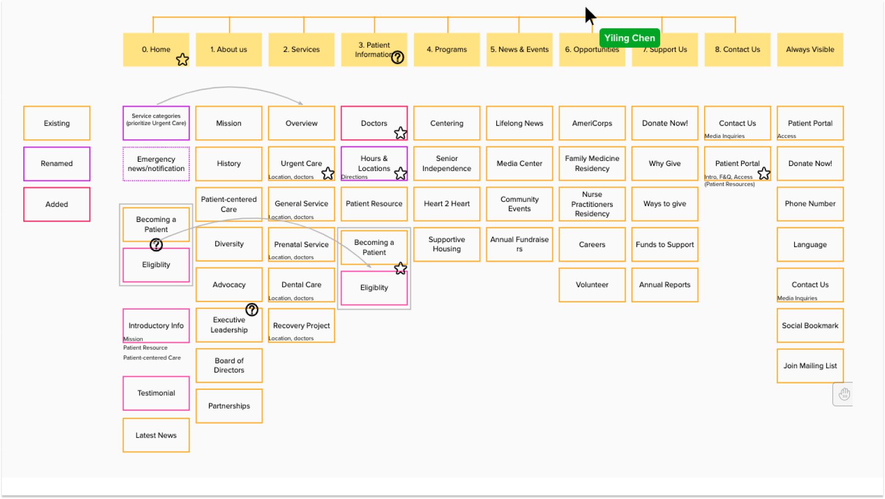
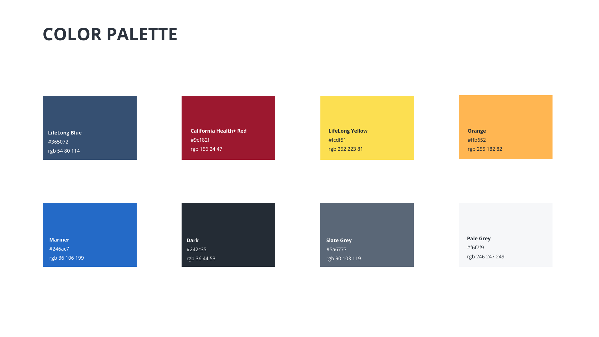
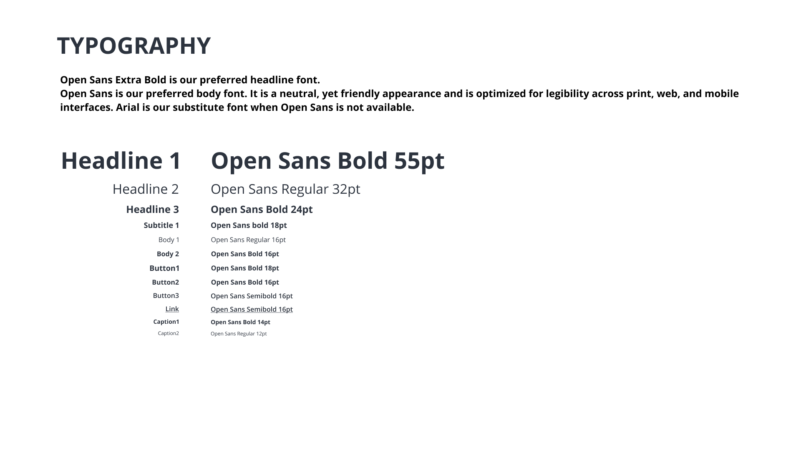
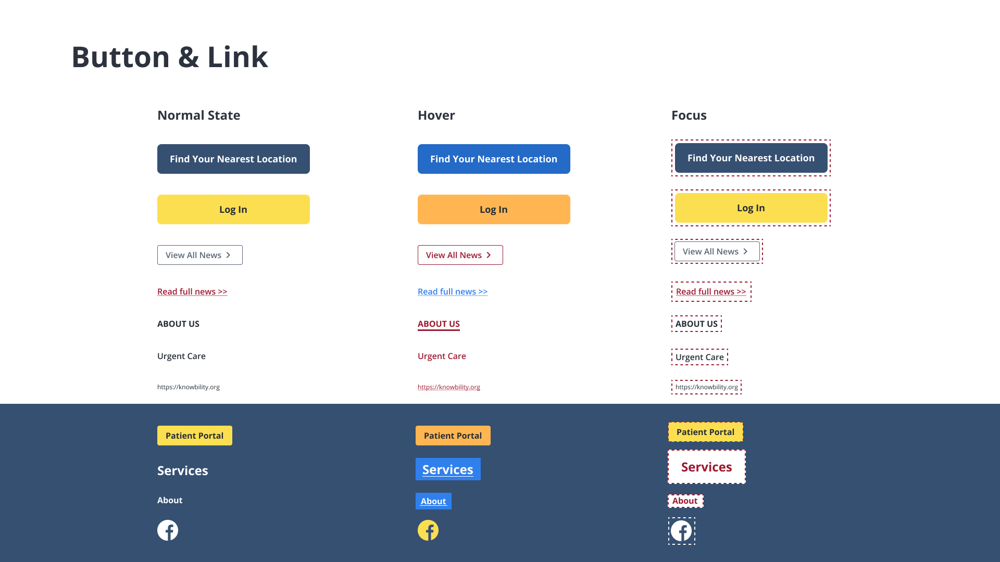
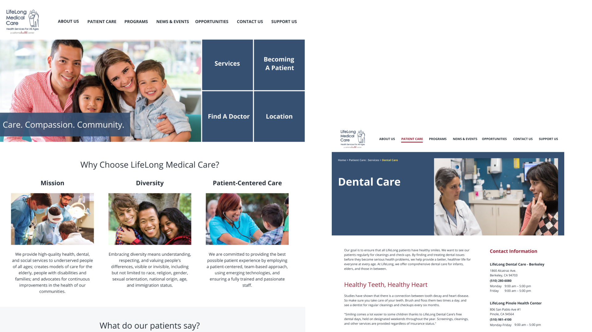

Feb. 2020- Apr. 2020
Jiaxuan Wang,
Yiyan Huang,
Debbie Chen,
Ann Tsai,
Claire Chang.
UX Designer,
FED Developer
The Accessibility Internet Rally is a design competition that brings together organizations and tech experts to create websites that are fully accessible to persons with disabilities.
Our client is LifeLong Medical Care, a non-profit organization that provides high-quality health, dental, and social services to people of all ages who are underserved. Our team redesigned an accessible and responsive website for them.
Our team took first place in the competition.
Click to see the website!
My responsibilities included designing interaction designs and developing a responsive and accessible website.
To redesign the website, we conduct an interview with our client to better understand their goals and those of their users.
We examined their current webpages in order to comprehend their current Information Architecture. With the goals in mind from the first step, we identified the possible area that can be modified.
We used card sorting to improve the information architecture.
We designed the Website Style Guideline with the goal of ensuring that it not only looks good, but also meets accessibility standards like contrast and font size.
  After deciding on a few key pages for users, we began creating a website prototype.
To ensure that our code meets accessibility standards in order to generate an accessible and responsible website, we create an excel spreadsheet that lists all of the requirements of the Web Content Accessibility Guidelines. We also examined if our websites meet the requirements by Web Accessibility Evaluation Tool when coding. Knowbaility also invited a blind accessibility expert to test our website and provide feedback. We used github to collaborate on this website.
Click to see the website!This project taught me how to create an accessible website. The sooner I began thinking about accessibility, the better. Aside from the tool test, a blind person test is required, and he offers us with useful comments. Accessibility is not an extra work, it is a part of work.